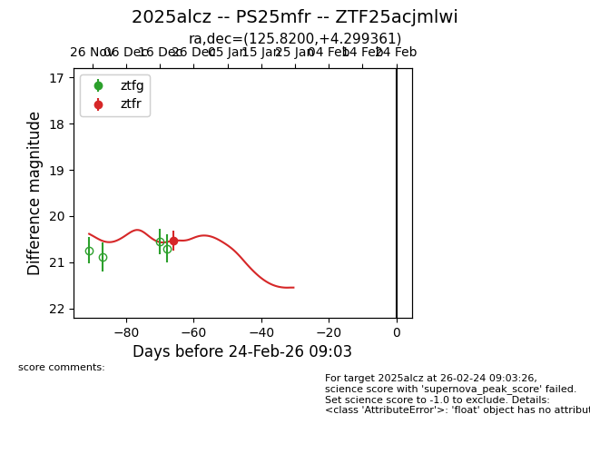
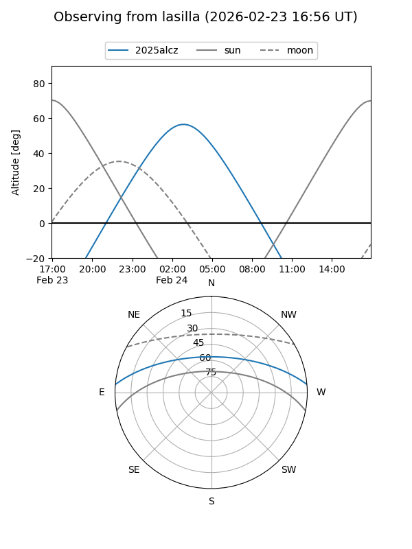
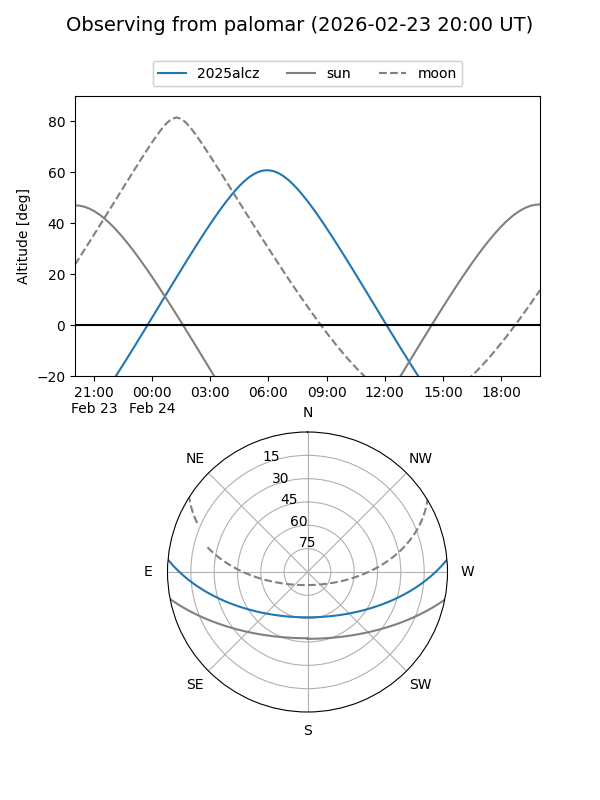
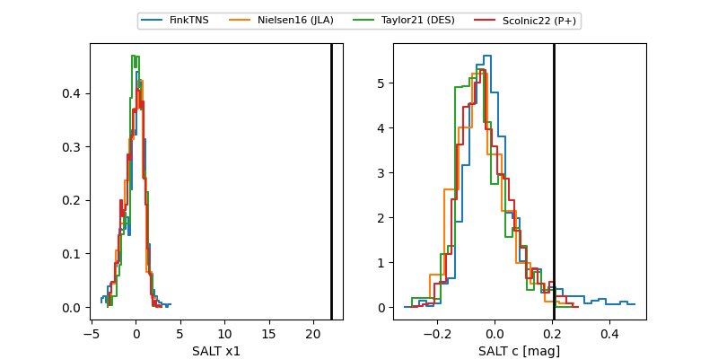

2025alcz
Target 2025alcz at 2026-01-06 11:06
Aliases and brokers:
FINK:
Lasair:
ALeRCE:
TNS:
YSE:
alt names
ZTF25acjmlwi (ztf,fink_ztf)
2025alcz (tns,yse)
PS25mfr (panstarrs)
Coordinates:
equatorial (ra, dec) = 125.8200,+4.29936
equatorial (HMS+DMS) = 08:23:16.81,+04:17:57.70
galactic (l, b) = (219.8039,+22.35779)
Flags:
Photometry:
last ztfr=20.53
1 ztfr detections
Lightcurve

Visibility


Additional plots
